Programmable Materials, Effects, Geometry, and Texture data
While the built-in materials of Qt Quick 3D, DefaultMaterial and PrincipledMaterial, allow a wide degree of customization via their properties, they do not provide programmability on the vertex and fragment shader level. To allow that, the CustomMaterial type is provided.
| A model with PrincipledMaterial | With a CustomMaterial transforming the vertices |
|---|---|
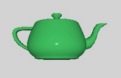 | 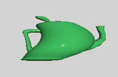 |
Post-processing effects, where one or more passes of processing on the color buffer are performed, optionally taking the depth buffer into account, before the View3D's output is passed on to Qt Quick, also exist in two varieties:
- built-in post-processing steps that can be configured via ExtendedSceneEnvironment, such as glow/bloom, depth of field, vignette, lens flare,
customeffects implemented by the application in form of fragment shader code and a specification of the processing passes in an Effect object.
In practice there is a third category of post-processing effects: 2D effects implemented via Qt Quick, operating on the output of the View3D item without any involvement from the 3D renderer. For example, to apply a blur to a View3D item, the simplest approach is to use Qt Quick's existing facilities, such as MultiEffect. The 3D post-processing system becomes beneficial for complex effects that involve 3D scene concepts such as the depth buffer or the screen texture, or need to deal with HDR tonemapping or need multiple passes with intermediate buffers, etc. Simple 2D effects that do not require any insight into the 3D scene and renderer can always be implemented with ShaderEffect or MultiEffect instead.
| Scene without effect | The same scene with a custom post-processing effect applied |
|---|---|
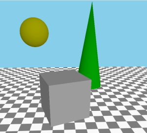 | 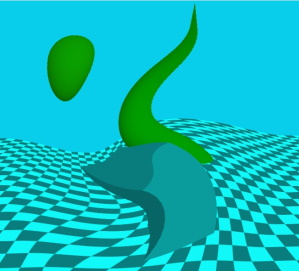 |
In addition to programmable materials and post-processing, there are two types of data that is normally provided in form of files (.mesh files or images such as .png):
- vertex data, including the geometry for the mesh to be rendered, texture coordinates, normals, colors, and other data,
- the content for textures that are then used as texture maps for the rendered objects, or used with skybox or image based lighting.
If they so wish, applications can provide such data from C++ in form of a QByteArray. Such data can also be changed over time, allowing to procedurally generate and later alter the data for a Model or Texture.
| A grid, rendered by specifying vertex data dynamically from C++ | A cube textured with image data generated from C++ |
|---|---|
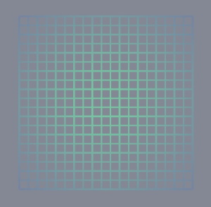 | 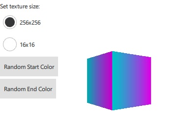 |
These four approaches to customizing and making materials, effects, geometry, and textures dynamic enable the programmability of shading and procedural generation of the data the shaders get as their input. The following sections provide an overview of these features. The full reference is available in the documentation pages for the respective types:
| Feature | Reference Documentation | Relevant Examples |
|---|---|---|
| Custom materials | CustomMaterial | Qt Quick 3D - Custom Shaders Example, Qt Quick 3D - Custom Materials Example |
| Custom post-processing effects | Effect | Qt Quick 3D - Custom Effect Example |
| Custom geometry | QQuick3DGeometry, Model::geometry | Qt Quick 3D - Custom Geometry Example |
| Custom texture data | QQuick3DTextureData, Texture::textureData | Qt Quick 3D - Procedural Texture Example |
Programmability for Materials
Let's have a scene with a cube, and start with a default PrincipledMaterial and CustomMaterial:
| PrincipledMaterial | CustomMaterial |
|---|---|
import QtQuick import QtQuick3D Item { View3D { anchors.fill: parent environment: SceneEnvironment { backgroundMode: SceneEnvironment.Color clearColor: "black" } PerspectiveCamera { z: 600 } DirectionalLight { } Model { source: "#Cube" scale: Qt.vector3d(2, 2, 2) eulerRotation.x: 30 materials: PrincipledMaterial { } } } } | import QtQuick import QtQuick3D Item { View3D { anchors.fill: parent environment: SceneEnvironment { backgroundMode: SceneEnvironment.Color clearColor: "black" } PerspectiveCamera { z: 600 } DirectionalLight { } Model { source: "#Cube" scale: Qt.vector3d(2, 2, 2) eulerRotation.x: 30 materials: CustomMaterial { } } } } |
These both lead to the exact same result, because a CustomMaterial is effectively a PrincipledMaterial, when no vertex or fragment shader code is added to it.
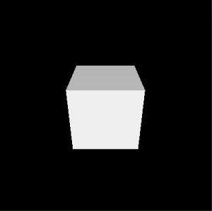
Note: Properties, such as, baseColor, metalness, baseColorMap, and many others, have no equivalent properties in the CustomMaterial QML type. This is by design: customizing the material is done via shader code, not by merely providing a few fixed values.
Our first vertex shader
Let's add a custom vertex shader snippet. This is done by referencing a file in the vertexShader property. The approach will be the same for fragment shaders. These references work like Image.source or ShaderEffect.vertexShader: they are local or qrc URLs, and a relative path is treated relative to the .qml file's location. The common approach is therefore to place the .vert and .frag files into the Qt resource system (qt_add_resources when using CMake) and reference them using a relative path.
In Qt 6.0 inline shader strings are no longer supported, neither in Qt Quick nor in Qt Quick 3D. (make note of the fact that these properties are URLs, not strings) However, due to their intrinsically dynamic nature, custom materials and post-processing effects in Qt Quick 3D still provide shader snippets in source form in the referenced files. This is a difference to ShaderEffect where the shaders are complete on their own, with no further amending by the engine, and so are expected to be provided as pre-conditioned .qsb shader packs.
Note: In Qt Quick 3D URLs can only refer to local resources. Schemes for remote content are not supported.
Note: The shading language used is Vulkan-compatible GLSL. The .vert and .frag files are not complete shaders on their own, hence being often called snippets. That is why there are no uniform blocks, input and output variables, or sampler uniforms provided directly by these snippets. Rather, the Qt Quick 3D engine will amend them as appropriate.
| Change in main.qml, material.vert | Result |
|---|---|
materials: CustomMaterial {
vertexShader: "material.vert"
}
void MAIN()
{
}
|
A custom vertex or fragment shader snippet is expected to provide one or more functions with pre-defined names, such as MAIN, DIRECTIONAL_LIGHT, POINT_LIGHT, SPOT_LIGHT, AMBIENT_LIGHT, SPECULAR_LIGHT. For now let's focus on MAIN.
As shown here, the end result with an empty MAIN() is exactly the same as before.
Before making it more interesting, let's look at an overview of the most commonly used special keywords in custom vertex shader snippets. This is not the full list. For a full reference, check the CustomMaterial page.
| Keyword | Type | Description |
|---|---|---|
| MAIN | void MAIN() is the entry point. This function must always be present in a custom vertex shader snippet, there is no point in providing one otherwise. | |
| VERTEX | vec3 | The vertex position the shader receives as input. A common use case for vertex shaders in custom materials is to change (displace) the x, y, or z values of this vector, by simply assigning a value to the whole vector, or some of its components. |
| NORMAL | vec3 | The vertex normal from the input mesh data, or all zeroes if there were no normals provided. As with VERTEX, the shader is free to alter the value as it sees fit. The altered value is then used by the rest of the pipeline, including the lighting calculations in the fragment stage. |
| UV0 | vec2 | The first set of texture coordinates from the input mesh data, or all zeroes if there were no UV values provided. As with VERTEX and NORMAL, the value can altered. |
| MODELVIEWPROJECTION_MATRIX | mat4 | The model-view-projection matrix. To unify the behavior regardless of which graphics API rendering happens with, all vertex data and transformation matrices follow OpenGL conventions on this level. (Y axis pointing up, OpenGL-compatible projection matrix) Read only. |
| MODEL_MATRIX | mat4 | The model (world) matrix. Read only. |
| NORMAL_MATRIX | mat3 | The transposed inverse of the top-left 3x3 slice of the model matrix. Read only. |
| CAMERA_POSITION | vec3 | The camera position in world space. In the examples on this page this is (0, 0, 600). Read only. |
| CAMERA_DIRECTION | vec3 | The camera direction vector. In the examples on this page this is (0, 0, -1). Read only. |
| CAMERA_PROPERTIES | vec2 | The near and far clip values of the camera. In the examples on this page this is (10, 10000). Read only. |
| POINT_SIZE | float | Relevant only when rendering with a topology of points, for example because the custom geometry provides such a geometry for the mesh. Writing to this value is equivalent to setting pointSize on a PrincipledMaterial. |
| POSITION | vec4 | Like gl_Position. When not present, a default assignment statement is generated automatically using MODELVIEWPROJECTION_MATRIX and VERTEX. This is why an empty MAIN() is functional, and in most cases there will be no need to assign a custom value to it. |
Let's make a custom material that displaces the vertices according to some pattern. To make it more interesting, have some animated QML properties, the values of which end up being exposed as uniforms in the shader code. (to be precise, most properties are going to be mapped to members in a uniform block, backed by a uniform buffer at run time, but Qt Quick 3D conveniently makes such details transparent to the custom material author)
| Change in main.qml, material.vert | Result |
|---|---|
materials: CustomMaterial {
vertexShader: "material.vert"
property real uAmplitude: 0
NumberAnimation on uAmplitude {
from: 0; to: 100; duration: 5000; loops: -1
}
property real uTime: 0
NumberAnimation on uTime {
from: 0; to: 100; duration: 10000; loops: -1
}
}
void MAIN()
{
VERTEX.x += sin(uTime + VERTEX.y) * uAmplitude;
}
| 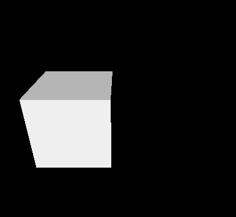 |
Uniforms from QML properties
Custom properties in the CustomMaterial object get mapped to uniforms. In the above example this includes uAmplitude and uTime. Any time the values change, the updated value will become visible in the shader. This concept may already be familiar from ShaderEffect.
The name of the QML property and the GLSL variable must match. There is no separate declaration in the shader code for the individual uniforms. Rather, the QML property name can be used as-is. This is why the example above can just reference uTime and uAmplitude in the vertex shader snippet without any previous declaration for them.
The following table lists how the types are mapped:
| QML Type | Shader Type | Notes |
|---|---|---|
| real, int, bool | float, int, bool | |
| color | vec4 | sRGB to linear conversion is performed implicitly |
| vector2d | vec2 | |
| vector3d | vec3 | |
| vector4d | vec4 | |
| matrix4x4 | mat4 | |
| quaternion | vec4 | scalar value is w |
| rect | vec4 | |
| point, size | vec2 | |
| TextureInput | sampler2D |
Improving the example
Before moving further, let's make the example somewhat better looking. By adding a rotated rectangle mesh and making the DirectionalLight cast shadows, we can verify that the alteration to the cube's vertices is correctly reflected in all rendering passes, including shadow maps. To get a visible shadow, the light is now placed a bit higher on the Y axis, and a rotation is applied to have it pointing partly downwards. (this being a directional light, the rotation matters)
| main.qml, material.vert | Result |
|---|---|
import QtQuick import QtQuick3D Item { View3D { anchors.fill: parent environment: SceneEnvironment { backgroundMode: SceneEnvironment.Color; clearColor: "black" } PerspectiveCamera { z: 600 } DirectionalLight { y: 200 eulerRotation.x: -45 castsShadow: true } Model { source: "#Rectangle" y: -250 scale: Qt.vector3d(5, 5, 5) eulerRotation.x: -45 materials: PrincipledMaterial { baseColor: "lightBlue" } } Model { source: "#Cube" scale: Qt.vector3d(2, 2, 2) eulerRotation.x: 30 materials: CustomMaterial { vertexShader: "material.vert" property real uAmplitude: 0 NumberAnimation on uAmplitude { from: 0; to: 100; duration: 5000; loops: -1 } property real uTime: 0 NumberAnimation on uTime { from: 0; to: 100; duration: 10000; loops: -1 } } } } }
void MAIN()
{
VERTEX.x += sin(uTime + VERTEX.y) * uAmplitude;
}
| 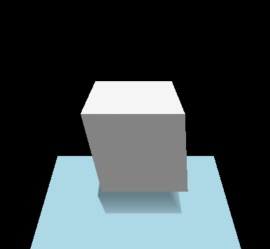 |
Adding a fragment shader
Many custom materials will want to have a fragment shader as well. In fact, many will want only a fragment shader. If there is no extra data to be passed from the vertex to fragment stage, and the default vertex transformation is sufficient, setting the vertexShader property can be left out from the CustomMaterial.
| Change in main.qml, material.frag | Result |
|---|---|
materials: CustomMaterial {
fragmentShader: "material.frag"
}
void MAIN()
{
}
| 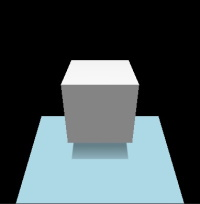 |
Our first fragment shader contains an empty MAIN() function. This is no different than not specifying a fragment shader snippet at all: what we get looks like what we get with a default PrincipledMaterial.
Let's look at some of the commonly used keywords in fragment shaders. This is not the full list, refer to the CustomMaterial documentation for a complete reference. Many of these are read-write, meaning they have a default value, but the shader can, and often will want to, assign a different value to them.
As the names suggest, many of these map to similarly named PrincipledMaterial properties, with the same meaning and semantics, following the metallic-roughness material model. It is up the custom material implementation to decide how these values are calculated: for example, a value for BASE_COLOR can be hard coded in the shader, can be based on sampling a texture, or can be calculated based on QML properties exposed as uniforms or on interpolated data passed along from the vertex shader.
| Keyword | Type | Description |
|---|---|---|
| BASE_COLOR | vec4 | The base color and alpha value. Corresponds to PrincipledMaterial::baseColor. The final alpha value of the fragment is the model opacity multiplied by the base color alpha. The default value is (1.0, 1.0, 1.0, 1.0). |
| EMISSIVE_COLOR | vec3 | The color of self-illumination. Corresponds to PrincipledMaterial::emissiveFactor. The default value is (0.0, 0.0, 0.0). |
| METALNESS | float | Metalness value in range 0-1. Default to 0, which means the material is dielectric (non-metallic). |
| ROUGHNESS | float | Roughness value in range 0-1. The default value is 0. Larger values soften specular highlights and blur reflections. |
| SPECULAR_AMOUNT | float | The strength of specularity in range 0-1. The default value is 0.5. For metallic objects with metalness set to 1 this value will have no effect. When both SPECULAR_AMOUNT and METALNESS have values larger than 0 but smaller than 1, the result is a blend between the two material models. |
| NORMAL | vec3 | The interpolated normal in world space, adjusted for double-sidedness when face culling is disabled. Read only. |
| UV0 | vec2 | The interpolated texture coordinates. Read only. |
| VAR_WORLD_POSITION | vec3 | Interpolated vertex position in world space. Read only. |
Let's make the cube's base color red:
| Change in main.qml, material.frag | Result |
|---|---|
materials: CustomMaterial {
fragmentShader: "material.frag"
}
void MAIN()
{
BASE_COLOR = vec4(1.0, 0.0, 0.0, 1.0);
}
| 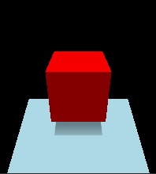 |
Now strengthen the level of self-illumination a bit:
| Change in main.qml, material.frag | Result |
|---|---|
materials: CustomMaterial {
fragmentShader: "material.frag"
}
void MAIN()
{
BASE_COLOR = vec4(1.0, 0.0, 0.0, 1.0);
EMISSIVE_COLOR = vec3(0.4);
}
| 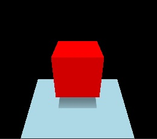 |
Instead of having values hardcoded in the shader, we could also use QML properties exposed as uniforms, even animated ones:
| Change in main.qml, material.frag | Result |
|---|---|
materials: CustomMaterial {
fragmentShader: "material.frag"
property color baseColor: "black"
ColorAnimation on baseColor {
from: "black"; to: "purple"; duration: 5000; loops: -1
}
}
void MAIN()
{
BASE_COLOR = vec4(baseColor.rgb, 1.0);
EMISSIVE_COLOR = vec3(0.4);
}
| 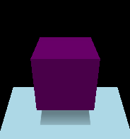 |
Let's do something less trivial, something that is not implementable with a PrincipledMaterial and its standard, built-in properties. The following material visualizes the texture UV coordinates of the cube mesh. U runs 0 to 1, so from black to red, while V is also 0 to 1, black to green.
| Change in main.qml, material.frag | Result |
|---|---|
materials: CustomMaterial {
fragmentShader: "material.frag"
}
void MAIN()
{
BASE_COLOR = vec4(UV0, 0.0, 1.0);
}
| 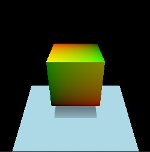 |
While we are at it, why not visualize normals as well, this time on a sphere. Like with UVs, if a custom vertex shader snippet were to alter the value of NORMAL, the interpolated per-fragment value in the fragment shader, also exposed under the name NORMAL, would reflect those adjustments.
| Change in main.qml, material.frag | Result |
|---|---|
Model { source: "#Sphere" scale: Qt.vector3d(2, 2, 2) materials: CustomMaterial { fragmentShader: "material.frag" } }
void MAIN()
{
BASE_COLOR = vec4(NORMAL, 1.0);
}
| 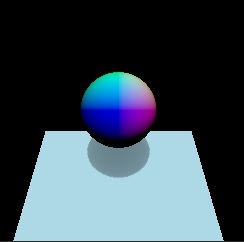 |
Colors
Let's switch over to a teapot model for a moment, make the material a blend of metallic and dielectric, and try to set a green base color for it. The green QColor value maps to (0, 128, 0), based on which our first attempt could be:
| main.qml, material.frag |
|---|
import QtQuick import QtQuick3D Item { View3D { anchors.fill: parent environment: SceneEnvironment { backgroundMode: SceneEnvironment.Color; clearColor: "black" } PerspectiveCamera { z: 600 } DirectionalLight { } Model { source: "teapot.mesh" scale: Qt.vector3d(60, 60, 60) eulerRotation.x: 30 materials: CustomMaterial { fragmentShader: "material.frag" } } } }
void MAIN()
{
BASE_COLOR = vec4(0.0, 0.5, 0.0, 1.0);
METALNESS = 0.6;
SPECULAR_AMOUNT = 0.4;
ROUGHNESS = 0.4;
}
|
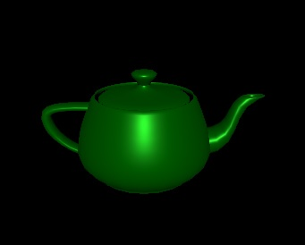
This does not look entirely right. Compare with the second approach:
| Change in main.qml, material.frag | Result |
|---|---|
materials: CustomMaterial {
fragmentShader: "material.frag"
property color uColor: "green"
}
void MAIN()
{
BASE_COLOR = vec4(uColor.rgb, 1.0);
METALNESS = 0.6;
SPECULAR_AMOUNT = 0.4;
ROUGHNESS = 0.4;
}
| 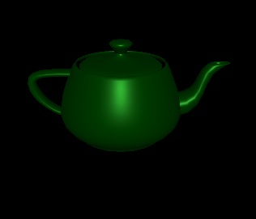 |
Switching to a PrincipledMaterial, we can confirm that setting the PrincipledMaterial::baseColor to "green" and following the metalness and other properties, the result is identical to our second approach:
| Change in main.qml | Result |
|---|---|
materials: PrincipledMaterial {
baseColor: "green"
metalness: 0.6
specularAmount: 0.4
roughness: 0.4
}
| 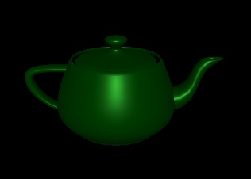 |
If the type of the uColor property was changed to vector4d, or any type other than color, the results would suddenly change and become identical to our first approach.
Why is this?
The answer lies in the sRGB to linear conversion that is performed implicitly for color properties of DefaultMaterial, PrincipledMaterial, and also for custom properties with a color type in a CustomMaterial. Such conversion is not performed for any other value, so if the shader hardcodes a color value, or bases it on a QML property with a type different from color, it will be up to the shader to perform linearization in case the source value was in sRGB color space. Converting to linear is important since Qt Quick 3D performs tonemapping on the results of fragment shading, and that process assumes values in the sRGB space as its input.
The built-in QColor constants, such as, "green", are all given in sRGB space. Therefore, just assigning vec4(0.0, 0.5, 0.0, 1.0) to BASE_COLOR in the first attempt is insufficient if we wanted a result that matches an RGB value (0, 128, 0) in the sRGB space. See the BASE_COLOR documentation in CustomMaterial for a formula for linearizing such color values. The same applies to color values retrieved by sampling textures: if the source image data is not in the sRGB color space, a conversion is needed (unless tonemapping is disabled).
Blending
Just writing a value less than 1.0 to BASE_COLOR.a is not sufficient if the expectation is to get alpha blending. Such materials will very often change the values of sourceBlend and destinationBlend properties to get the desired results.
Also keep in mind that the combined alpha value is the Node opacity multiplied by the material alpha.
To visualize, let's use a shader that assigns red with alpha 0.5 to BASE_COLOR:
| main.qml, material.frag | Result |
|---|---|
import QtQuick import QtQuick3D Item { View3D { anchors.fill: parent environment: SceneEnvironment { backgroundMode: SceneEnvironment.Color clearColor: "white" } PerspectiveCamera { id: camera z: 600 } DirectionalLight { } Model { source: "#Cube" x: -150 eulerRotation.x: 60 eulerRotation.y: 20 materials: CustomMaterial { fragmentShader: "material.frag" } } Model { source: "#Cube" eulerRotation.x: 60 eulerRotation.y: 20 materials: CustomMaterial { sourceBlend: CustomMaterial.SrcAlpha destinationBlend: CustomMaterial.OneMinusSrcAlpha fragmentShader: "material.frag" } } Model { source: "#Cube" x: 150 eulerRotation.x: 60 eulerRotation.y: 20 materials: CustomMaterial { sourceBlend: CustomMaterial.SrcAlpha destinationBlend: CustomMaterial.OneMinusSrcAlpha fragmentShader: "material.frag" } opacity: 0.5 } } }
void MAIN()
{
BASE_COLOR = vec4(1.0, 0.0, 0.0, 0.5);
}
| 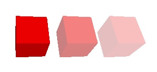 |
The first cube is writing 0.5 to the alpha value of the color but it does not bring visible results since alpha blending is not enabled. The second cube enables simple alpha blending via the CustomMaterial properties. The third one also assigns an opacity of 0.5 to the Model, which means that the effective opacity is 0.25.
Passing data between the vertex and fragment shader
Calculating a value per vertex (for example, assuming a single triangle, for the 3 corners of the triangle), and then passing it on to the fragment stage, where for each fragment (for example, every fragment covered by the rasterized triangle) an interpolated value is made accessible. In custom material shader snippets this is made possible by the VARYING keyword. This provides a syntax similar to GLSL 120 and GLSL ES 100, but will work regardless of the graphics API used at run time. The engine will take care of rewriting the varying declaration as appropriate.
Let's see how the classic texture sampling with UV coordinates would look like. Textures are going to be covered in an upcoming section, for now let's focus on how we get the UV coordinates that can be passed to the texture() function in the shader.
| main.qml, material.vert, material.frag |
|---|
import QtQuick import QtQuick3D Item { View3D { anchors.fill: parent environment: SceneEnvironment { backgroundMode: SceneEnvironment.Color; clearColor: "black" } PerspectiveCamera { z: 600 } DirectionalLight { } Model { source: "#Sphere" scale: Qt.vector3d(4, 4, 4) eulerRotation.x: 30 materials: CustomMaterial { vertexShader: "material.vert" fragmentShader: "material.frag" property TextureInput someTextureMap: TextureInput { texture: Texture { source: "qt_logo_rect.png" } } } } } }
VARYING vec2 uv;
void MAIN()
{
uv = UV0;
}
VARYING vec2 uv;
void MAIN()
{
BASE_COLOR = texture(someTextureMap, uv);
}
|
| qt_logo_rect.png | Result |
|---|---|
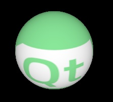 |
Note that VARYING declarations. The name and type must match, uv in the fragment shader will expose the interpolated UV coordinate for the current fragment.
Any other type of data can be passed on to the fragment stage in a similar manner. It is worth noting that in many cases setting up the material's own varyings is not necessary because there are builtins provided that cover many of typical needs. This includes making the (interpolated) normals, UVs, world position (VAR_WORLD_POSITION), or the vector pointing towards the camera (VIEW_VECTOR).
The above example can in fact be simplified to the following as UV0 is automatically available in the fragment stage as well:
| Change in main.qml, material.frag | Result |
|---|---|
materials: CustomMaterial {
fragmentShader: "material.frag"
property TextureInput someTextureMap: TextureInput {
texture: Texture {
source: "qt_logo_rect.png"
}
}
void MAIN()
{
BASE_COLOR = texture(someTextureMap, UV0);
}
|
Textures
A CustomMaterial has no built-in texture maps, meaning there is no equivalent of, for example, PrincipledMaterial::baseColorMap. This is because implementing the same is often trivial, while giving a lot more flexibility than what DefaultMaterial and PrincipledMaterial has built in. Besides simply sampling a texture, custom fragment shader snippets are free to combine and blend data from various sources when calculating the values they assign to BASE_COLOR, EMISSIVE_COLOR, ROUGHNESS, etc. They can base these calculations on data provided via QML properties, interpolated data sent on from the vertex stage, values retrieved from sampling textures, and on hardcoded values.
As the previous example shows, exposing a texture to the vertex, fragment, or both shaders is very similar to scalar and vector uniform values: a QML property with the type TextureInput will automatically get associated with a sampler2D in the shader code. As always, there is no need to declare this sampler in the shader code.
A TextureInput references a Texture, with an additional enabled property. A Texture can source its data in three ways: from an image file, from a texture with live Qt Quick content, or can be provided from C++ via QQuick3DTextureData.
Note: When it comes to Texture properties, the source, tiling, and filtering related ones are the only ones that are taken into account implicitly with custom materials, as the rest (such as, UV transformations) is up to the custom shaders to implement as they see fit.
Let's see an example where a model, a sphere in this case, is textured using live Qt Quick content:
| main.qml, material.frag |
|---|
import QtQuick import QtQuick3D Item { View3D { anchors.fill: parent environment: SceneEnvironment { backgroundMode: SceneEnvironment.Color; clearColor: "black" } PerspectiveCamera { z: 600 } DirectionalLight { } Model { source: "#Sphere" scale: Qt.vector3d(4, 4, 4) eulerRotation.x: 30 materials: CustomMaterial { fragmentShader: "material.frag" property TextureInput someTextureMap: TextureInput { texture: Texture { sourceItem: Rectangle { width: 512; height: 512 color: "red" Rectangle { width: 32; height: 32 anchors.horizontalCenter: parent.horizontalCenter y: 150 color: "gray"; NumberAnimation on rotation { from: 0; to: 360; duration: 3000; loops: -1 } } Text { anchors.centerIn: parent text: "Texture Map" font.pointSize: 16 } } } } } } } }
void MAIN()
{
vec2 uv = vec2(UV0.x, 1.0 - UV0.y);
vec4 c = texture(someTextureMap, uv);
BASE_COLOR = c;
}
|
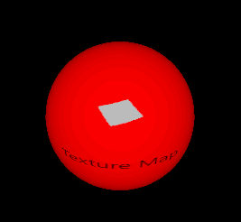
Here the 2D subtree (Rectangle with two children: another Rectangle and the Text) is rendered in to an 512x512 2D texture every time this mini-scene changes. The texture is then exposed to the custom material under the name of someTextureMap.
Note the flipping of the V coordinate in the shader. As noted above, custom materials, where there is full programmability on shader level, do not offer the "fixed" features of Texture and PrincipledMaterial. This means that any transformations to the UV coordinates will need to be applied by the shader. Here we know that the texture is generated via Texture::sourceItem and so V needs to be flipped to get something that matches the UV set of the mesh we are using.
What this example shows is possible to do with a PrincipledMaterial too. Let's make it more interesting by doing a simple emboss effect in addition:
| material.frag | Result |
|---|---|
void MAIN()
{
vec2 uv = vec2(UV0.x, 1.0 - UV0.y);
vec2 size = vec2(textureSize(someTextureMap, 0));
vec2 d = vec2(1.0 / size.x, 1.0 / size.y);
vec4 diff = texture(someTextureMap, uv + d) - texture(someTextureMap, uv - d);
float c = (diff.x + diff.y + diff.z) + 0.5;
BASE_COLOR = vec4(c, c, c, 1.0);
}
| 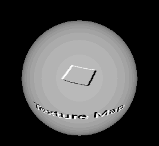 |
With the features covered so far a wide range of possibilities are open for creating materials that shade the meshes in visually impressive ways. To finish the basic tour, let's look at an example that applies height and normal maps to a plane mesh. (a dedicated .mesh file is used here because the builtin #Rectangle does not have enough subdivisions) For better lighting results, we will use image based lighting with a 360 degree HDR image. The image is also set as the skybox to make it more clear what is happening.
First let's start with an empty CustomMaterial:
| main.qml | Result |
|---|---|
import QtQuick import QtQuick3D Item { View3D { anchors.fill: parent environment: SceneEnvironment { backgroundMode: SceneEnvironment.SkyBox lightProbe: Texture { source: "00489_OpenfootageNET_snowfield_low.hdr" } } PerspectiveCamera { z: 600 } Model { source: "plane.mesh" scale: Qt.vector3d(400, 400, 400) z: 400 y: -50 eulerRotation.x: -90 materials: CustomMaterial { } } } } | 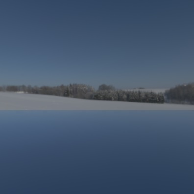 |
Now let's make some shaders that apply a height and normal map to the mesh:
| Height map | Normap map |
|---|---|
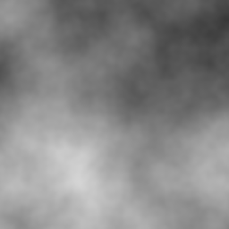 | 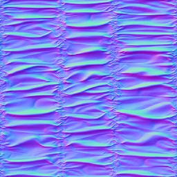 |
| material.vert, material.frag |
|---|
float getHeight(vec2 pos)
{
return texture(heightMap, pos).r;
}
void MAIN()
{
const float offset = 0.004;
VERTEX.y += getHeight(UV0);
TANGENT = normalize(vec3(0.0, getHeight(UV0 + vec2(0.0, offset)) - getHeight(UV0 + vec2(0.0, -offset)), offset * 2.0));
BINORMAL = normalize(vec3(offset * 2.0, getHeight(UV0 + vec2(offset, 0.0)) - getHeight(UV0 + vec2(-offset, 0.0)), 0.0));
NORMAL = cross(TANGENT, BINORMAL);
}
void MAIN()
{
vec3 normalValue = texture(normalMap, UV0).rgb;
normalValue.xy = normalValue.xy * 2.0 - 1.0;
normalValue.z = sqrt(max(0.0, 1.0 - dot(normalValue.xy, normalValue.xy)));
NORMAL = normalize(mix(NORMAL, TANGENT * normalValue.x + BINORMAL * normalValue.y + NORMAL * normalValue.z, 1.0));
}
|
| Change in main.qml | Result |
|---|---|
materials: CustomMaterial {
vertexShader: "material.vert"
fragmentShader: "material.frag"
property TextureInput normalMap: TextureInput {
texture: Texture { source: "normalmap.jpg" }
}
property TextureInput heightMap: TextureInput {
texture: Texture { source: "heightmap.png" }
}
}
| 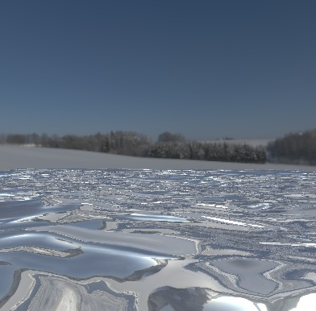 |
Note: The WasdController object can be immensely helpful during development and troubleshooting as it allows navigating and looking around in the scene with the keyboard and mouse in a familiar manner. Having a camera controlled by the WasdController is as simple as:
import QtQuick3D.Helpers
View3D {
PerspectiveCamera {
id: camera
}
// ...
}
WasdController {
controlledObject: camera
}
Depth and screen textures
When a custom shader snippet uses the DEPTH_TEXTURE or SCREEN_TEXTURE keywords, it opts in to generating the corresponding textures in a separate render pass, which is not necessarily a cheap operation, but allows implementing a variety of techniques, such as refraction for glass-like materials.
DEPTH_TEXTURE is a sampler2D that allows sampling a texture with the contents of the depth buffer with all the opaque objects in the scene rendered. Similarly, SCREEN_TEXTURE is a sampler2D that allows sampling a texture containing the contents of the scene excluding any transparent materials or any materials also using the SCREEN_TEXTURE. The texture can be used for materials that require the contents of the framebuffer they are being rendered to. The SCREEN_TEXTURE texture uses the same clear mode as the View3D. The size of these textures matches the size of the View3D in pixels.
Let's have a simple demonstration by visualizing the depth buffer contents via DEPTH_TEXTURE. The camera's far clip value is reduced here from the default 10000 to 2000, in order to have a smaller range, and so have the visualized depth value differences more obvious. The result is a rectangle that happens to visualize the depth buffer for the scene over its surface.
| main.qml, material.frag | Result |
|---|---|
import QtQuick import QtQuick3D import QtQuick3D.Helpers Rectangle { width: 400 height: 400 color: "black" View3D { anchors.fill: parent PerspectiveCamera { id: camera z: 600 clipNear: 1 clipFar: 2000 } DirectionalLight { } Model { source: "#Cube" scale: Qt.vector3d(2, 2, 2) position: Qt.vector3d(150, 200, -1000) eulerRotation.x: 60 eulerRotation.y: 20 materials: PrincipledMaterial { } } Model { source: "#Cylinder" scale: Qt.vector3d(2, 2, 2) position: Qt.vector3d(400, 200, -1000) materials: PrincipledMaterial { } opacity: 0.3 } Model { source: "#Sphere" scale: Qt.vector3d(2, 2, 2) position: Qt.vector3d(-150, 200, -600) materials: PrincipledMaterial { } } Model { source: "#Cone" scale: Qt.vector3d(2, 2, 2) position: Qt.vector3d(0, 400, -1200) materials: PrincipledMaterial { } } Model { source: "#Rectangle" scale: Qt.vector3d(3, 3, 3) y: -150 materials: CustomMaterial { fragmentShader: "material.frag" } } } WasdController { controlledObject: camera } }
void MAIN()
{
float zNear = CAMERA_PROPERTIES.x;
float zFar = CAMERA_PROPERTIES.y;
float zRange = zFar - zNear;
vec4 depthSample = texture(DEPTH_TEXTURE, vec2(UV0.x, 1.0 - UV0.y));
float zn = 2.0 * depthSample.r - 1.0;
float d = 2.0 * zNear * zFar / (zFar + zNear - zn * zRange);
d /= zFar;
BASE_COLOR = vec4(d, d, d, 1.0);
}
| 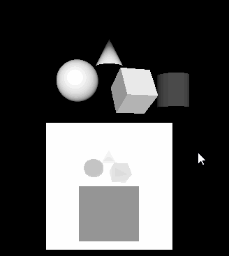 |
Note how the cylinder is not present in DEPTH_TEXTURE due to its reliance on semi-transparency, which puts it into a different category than the other objects that are all opaque. These objects do not write into the depth buffer, although they do test against the depth values written by opaque objects, and rely on being rendered in back to front order. Hence they are not present in DEPTH_TEXTURE either.
What happens if we switch the shader to sample SCREEN_TEXTURE instead?
| material.frag | Result |
|---|---|
void MAIN()
{
vec4 c = texture(SCREEN_TEXTURE, vec2(UV0.x, 1.0 - UV0.y));
if (c.a == 0.0)
c.rgb = vec3(0.2, 0.1, 0.3);
BASE_COLOR = c;
}
| 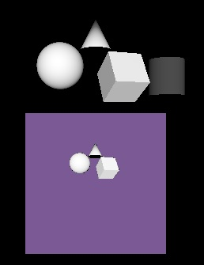 |
Here the rectangle is textured with SCREEN_TEXTURE, while replacing transparent pixels with purple.
Light processor functions
An advanced feature of CustomMaterial is the ability to define functions in the fragment shader that reimplement the lighting equations that are used to calculate the fragment color. A light processor function, when present, is called once per each light in the scene, for each fragment. There is a dedicated function for different light types, as well as the ambient and specular contribution. When no corresponding light processor function is present, the standard calculations are used, just like a PrincipledMaterial would do. When a light processor is present, but the function body is empty, it means there will be no contribution from a given type of lights in the scene.
Refer to the CustomMaterial documentation for details on functions such as DIRECTIONAL_LIGHT, POINT_LIGHT, SPOT_LIGHT, AMBIENT_LIGHT, and SPECULAR_LIGHT.
Unshaded custom materials
There is another type of CustomMaterial: unshaded custom materials. All the example so far used shaded custom materials, with the shadingMode property left at its default CustomMaterial.Shaded value.
What happens if we switch this property to CustomMaterial.Unshaded?
First of all, keywords like BASE_COLOR, EMISSIVE_COLOR, METALNESS, etc. no longer have the desired effect. This is because an unshaded material, as the name suggests, does not automatically get amended with much of the standard shading code, thus ignoring lights, image based lighting, shadows, and ambient occlusion in the scene. Rather, an unshaded material gives full control to the shader via the FRAGCOLOR keyword. This is similar to gl_FragColor: the color assigned to FRAGCOLOR is the result and the final color of the fragment, without any further adjustments by Qt Quick 3D.
| main.qml, material.frag, material2.frag | Result |
|---|---|
import QtQuick import QtQuick3D Item { View3D { anchors.fill: parent environment: SceneEnvironment { backgroundMode: SceneEnvironment.Color clearColor: "black" } PerspectiveCamera { z: 600 } DirectionalLight { } Model { source: "#Cylinder" x: -100 eulerRotation.x: 30 materials: CustomMaterial { fragmentShader: "material.frag" } } Model { source: "#Cylinder" x: 100 eulerRotation.x: 30 materials: CustomMaterial { shadingMode: CustomMaterial.Unshaded fragmentShader: "material2.frag" } } } }
void MAIN()
{
BASE_COLOR = vec4(1.0);
}
void MAIN()
{
FRAGCOLOR = vec4(1.0);
}
| 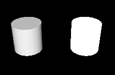 |
Notice how the right cylinder ignores the DirectionalLight in the scene. Its shading knows nothing about scene lighting, the final fragment color is all white.
The vertex shader in an unshaded material still has the typical inputs available: VERTEX, NORMAL, MODELVIEWPROJECTION_MATRIX, etc. and can write to POSITION. The fragment shader no longer has the similar conveniences available, however: NORMAL, UV0, or VAR_WORLD_POSITION are not available in an unshaded material's fragment shader. Rather, it is now up to the shader code to calculate and pass on using VARYING everything it needs to determine the final fragment color.
Let's look at an example that has both a vertex and fragment shader. The altered vertex position is passed on to the fragment shader, with an interpolated value made available to every fragment.
| main.qml, material.vert, material.frag |
|---|
import QtQuick import QtQuick3D Item { View3D { anchors.fill: parent environment: SceneEnvironment { backgroundMode: SceneEnvironment.Color clearColor: "black" } PerspectiveCamera { z: 600 } Model { source: "#Sphere" scale: Qt.vector3d(3, 3, 3) materials: CustomMaterial { property real time: 0.0 NumberAnimation on time { from: 0; to: 100; duration: 20000; loops: -1 } property real amplitude: 10.0 shadingMode: CustomMaterial.Unshaded vertexShader: "material.vert" fragmentShader: "material.frag" } } } }
VARYING vec3 pos;
void MAIN()
{
pos = VERTEX;
pos.x += sin(time * 4.0 + pos.y) * amplitude;
POSITION = MODELVIEWPROJECTION_MATRIX * vec4(pos, 1.0);
}
VARYING vec3 pos;
void MAIN()
{
FRAGCOLOR = vec4(vec3(pos.x * 0.02, pos.y * 0.02, pos.z * 0.02), 1.0);
}
|
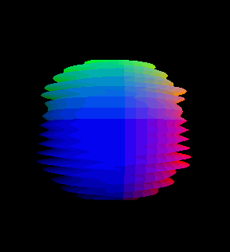
Unshaded materials are useful when interacting with scene lighting is not necessary or desired, and the material needs full control on the final fragment color. Notice how the example above has neither a DirectionalLight nor any other lights, but the sphere with the custom material shows up as expected.
Note: An unshaded material that only has a vertex shader snippet, but does not specify the fragmentShader property, will still be functional but the results are as if the shadingMode was set to Shaded. Therefore it makes little sense to switch shadingMode for materials that only have a vertex shader.
Programmability for Effects
Post-processing effects apply one or more fragment shaders to the result of a View3D. The output from these fragment shaders is then displayed instead of the original rendering results. This is conceptually very similar to Qt Quick's ShaderEffect and ShaderEffectSource.
Note: Post-processing effects are only available when the renderMode for the View3D is set to View3D.Offscreen.
Custom vertex shader snippets can also be specified for an effect, but they have limited usefulness and therefore are expected to be used relatively rarely. The vertex input for a post-processing effect is a quad (either two triangles or a triangle strip), transforming or displacing the vertices of that is often not helpful. It can however make sense to have a vertex shader in order to calculate and pass on data to the fragment shader using the VARYING keyword. As usual, the fragment shader will then receive an interpolated value based on the current fragment coordinate.
The syntax of the shader snippets associated with a Effect is identical to the shaders for an unshaded CustomMaterial. When it comes to the built-in special keywords, VARYING, MAIN, FRAGCOLOR (fragment shader only), POSITION (vertex shader only), VERTEX (vertex shader only), and MODELVIEWPROJECTION_MATRIX work identically to CustomMaterial.
The most important special keywords for Effect fragment shaders are the following:
| Name | Type | Description |
|---|---|---|
| INPUT | sampler2D | The sampler for the input texture. An effect will typically sample this using INPUT_UV. |
| INPUT_UV | vec2 | UV coordinates for sampling INPUT. |
| INPUT_SIZE | vec2 | The size of the INPUT texture, in pixels. This is a convenient alternative to calling textureSize(). |
| OUTPUT_SIZE | vec2 | The size of the output texture, in pixels. Equal to INPUT_SIZE in many cases, but a multi-pass effect may have passes that output to intermediate textures with different sizes. |
| DEPTH_TEXTURE | sampler2D | Depth texture with the depth buffer contents with the opaque objects in the scene. Like with CustomMaterial, the presence of this keyword in the shader triggers generating the depth texture automatically. |
A post-processing effect
Let's start with a simple scene, this time using a few more objects, including a textured rectangle that uses a checkerboard texture as its base color map.
| main.qml | Result |
|---|---|
import QtQuick import QtQuick3D Item { View3D { anchors.fill: parent environment: SceneEnvironment { backgroundMode: SceneEnvironment.Color clearColor: "black" } PerspectiveCamera { z: 400 } DirectionalLight { } Texture { id: checkerboard source: "checkerboard.png" scaleU: 20 scaleV: 20 tilingModeHorizontal: Texture.Repeat tilingModeVertical: Texture.Repeat } Model { source: "#Rectangle" scale: Qt.vector3d(10, 10, 1) eulerRotation.x: -45 materials: PrincipledMaterial { baseColorMap: checkerboard } } Model { source: "#Cone" position: Qt.vector3d(100, -50, 100) materials: PrincipledMaterial { } } Model { source: "#Cube" position.y: 100 eulerRotation.y: 20 materials: PrincipledMaterial { } } Model { source: "#Sphere" position: Qt.vector3d(-150, 200, -100) materials: PrincipledMaterial { } } } } | 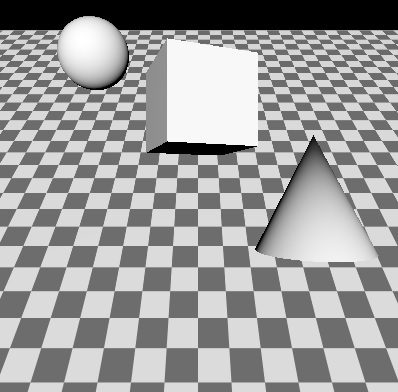 |
Now let's apply an affect to the entire scene. More precisely, to the View3D. When there are multiple View3D items in the scene, each has its own SceneEnvironment and therefore have their own post-processing effect chain. In the example there is one single View3D covering the entire window.
| Change in main.qml | effect.frag |
|---|---|
environment: SceneEnvironment {
backgroundMode: SceneEnvironment.Color
clearColor: "black"
effects: redEffect
}
Effect {
id: redEffect
property real uRed: 1.0
NumberAnimation on uRed { from: 1; to: 0; duration: 5000; loops: -1 }
passes: Pass {
shaders: Shader {
stage: Shader.Fragment
shader: "effect.frag"
}
}
}
|
void MAIN()
{
vec4 c = texture(INPUT, INPUT_UV);
c.r = uRed;
FRAGCOLOR = c;
}
|
This simple effect alters the red color channel value. Exposing QML properties as uniforms works the same way with effects as with custom materials. The shader starts with a line that is going to be very common when writing fragment shaders fro effects: sampling INPUT at the UV coordinates INPUT_UV. It then performs its desired calculations, and assigns the final fragment color to FRAGCOLOR.
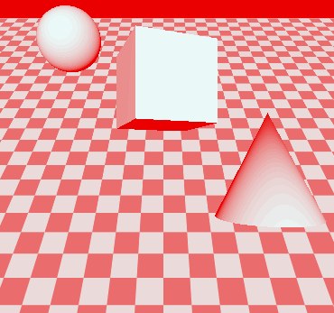
Many properties set in the example are in plural (effects, passes, shaders). While the list [ ] syntax can be omitted when having a single element only, all these properties are lists, and can hold more than one element. Why is this?
- effects is a list, because View3D allows chaining multiple effects together. The effects are applied in the order in which they are added to the list. This allows easily applying two or more effects together to the View3D, and is similar to what one can achieve in Qt Quick by nesting ShaderEffect items. The
INPUTtexture of the next effect is always a texture that contains the previous effect's output. The output of the last effect in what gets used as the final output of the View3D. - passes is a list, because unlike ShaderEffect, Effect has built-in support for multiple passes. A multi-pass effect is more powerful than chaining together multiple, independent effects in effects: a pass can output to a temporary, intermediate texture, which can then be used as input to subsequent passes, in addition to the original input texture of the effect. This allows creating complex effects that calculate, render, and blend together multiple textures in order to get to the final fragment color. This advanced use case is not going to be covered here. Refer to the Effect documentation page for details.
- shaders is a list, because an effect may have both a vertex and a fragment shader associated.
Chaining multiple effects
Let's look at an example where the effect from the previous example gets complemented by another effect similar to the built-in DistortionSpiral effect.
| Change in main.qml | effect2.frag |
|---|---|
environment: SceneEnvironment {
backgroundMode: SceneEnvironment.Color
clearColor: "black"
effects: [redEffect, distortEffect]
}
Effect {
id: redEffect
property real uRed: 1.0
NumberAnimation on uRed { from: 1; to: 0; duration: 5000; loops: -1 }
passes: Pass {
shaders: Shader {
stage: Shader.Fragment
shader: "effect.frag"
}
}
}
Effect {
id: distortEffect
property real uRadius: 0.1
NumberAnimation on uRadius { from: 0.1; to: 1.0; duration: 5000; loops: -1 }
passes: Pass {
shaders: Shader {
stage: Shader.Fragment
shader: "effect2.frag"
}
}
}
|
void MAIN()
{
vec2 center_vec = INPUT_UV - vec2(0.5, 0.5);
center_vec.y *= INPUT_SIZE.y / INPUT_SIZE.x;
float dist_to_center = length(center_vec) / uRadius;
vec2 texcoord = INPUT_UV;
if (dist_to_center <= 1.0) {
float rotation_amount = (1.0 - dist_to_center) * (1.0 - dist_to_center);
float r = radians(360.0) * rotation_amount / 4.0;
float cos_r = cos(r);
float sin_r = sin(r);
mat2 rotation = mat2(cos_r, sin_r, -sin_r, cos_r);
texcoord = vec2(0.5, 0.5) + rotation * (INPUT_UV - vec2(0.5, 0.5));
}
vec4 c = texture(INPUT, texcoord);
FRAGCOLOR = c;
}
|
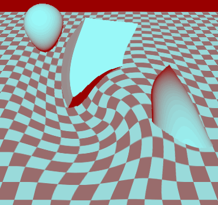
Now the perhaps surprising question: why is this a bad example?
More precisely, it is not bad, but rather shows a pattern that can often be beneficial to avoid.
Chaining effects this way can be useful, but it is important to keep in mind the performance implications: doing two render passes (one to generate a texture with the adjusted red color channel, and then another one two calculate the distortion) is quite wasteful when one would be enough. If the fragment shader snippets were combined, the same result could have been achieved with one single effect.
Defining Mesh and Texture Data from C++
Procedurally generating mesh and texture image data both follow similar steps:
- Subclass QQuick3DGeometry or QQuick3DTextureData
- Set the desired vertex or image data upon construction by calling the protected member functions from the base class
- If dynamic changes are needed afterwards at some point, set the new data and call update()
- Once the implementation is done, the class needs to be registered to make it visible in QML
- Model and Texture objects in QML can now use the custom vertex or image data provider by setting the Model::geometry or Texture::textureData property
Custom vertex data
Vertex data refers to the sequence of (typically float) values that make up a mesh. Instead of loading .mesh files, a custom geometry provider is responsible for providing the same data. The vertex data consist of attributes, such as position, texture (UV) coordinates, or normals. The specification of attributes describes what kind of attributes are present, the component type (for example, a 3 component float vector for vertex position consisting of x, y, z values), which offset they start at in the provided data, and what the stride (the increment that needs to be added to the offset to point to the next element for the same attribute) is.
This may seem familiar if one has worked with graphics APIs, such as OpenGL or Vulkan directly, because the way vertex input is specified with those APIs maps loosely to what a .mesh file or a QQuick3DGeometry instance defines.
In addition, the mesh topology (primitive type) must be specified too. For indexed drawing, the data for an index buffer must be provided as well.
There is one built-in custom geometry implementation: the QtQuick3D.Helpers module includes a GridGeometry type. This allows rendering a grid in the scene with line primitives, without having to implement a custom QQuick3DGeometry subclass.
One other common use cases is rendering points. This is fairly simple to do since the attribute specification is going to be minimal: we provide three floats (x, y, z) for each vertex, nothing else. A QQuick3DGeometry subclass could implement a geometry consisting of 2000 points similarly to the following:
clear();
const int N = 2000;
const int stride = 3 * sizeof(float);
QByteArray v;
v.resize(N * stride);
float *p = reinterpret_cast<float *>(v.data());
QRandomGenerator *rg = QRandomGenerator::global();
for (int i = 0; i < N; ++i) {
const float x = float(rg->bounded(200.0f) - 100.0f) / 20.0f;
const float y = float(rg->bounded(200.0f) - 100.0f) / 20.0f;
*p++ = x;
*p++ = y;
*p++ = 0.0f;
}
setVertexData(v);
setStride(stride);
setPrimitiveType(QQuick3DGeometry::PrimitiveType::Points);
addAttribute(QQuick3DGeometry::Attribute::PositionSemantic, 0, QQuick3DGeometry::Attribute::F32Type);
Combined with a material of
DefaultMaterial { lighting: DefaultMaterial.NoLighting cullMode: DefaultMaterial.NoCulling diffuseColor: "yellow" pointSize: 4 }
the end result is similar to this (here viewed from an altered camera angle, with the help of WasdController):
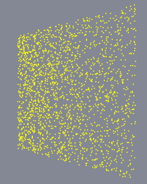
Note: Be aware that point sizes and line widths other than 1 may not be supported at run time, depending on the underlying graphics API. This is not something Qt has control over. Therefore, it can become necessary to implement alternative techniques instead of relying on point and line drawing.
Custom texture data
With textures, the data that needs to be provided is a lot simpler structurally: it is the raw pixel data, with a varying number of bytes per pixel, depending on the texture format. For example, an RGBA texture expects four bytes per pixel, whereas RGBA16F is four half-floats per pixel. This is similar to what a QImage stores internally. However, Qt Quick 3D textures can have formats the data for which cannot be represented by a QImage. For example, floating point HDR textures, or compressed textures. Therefore the data for QQuick3DTextureData is always provided as a raw sequence of bytes. This may seem familiar if one has worked with graphics APIs, such as OpenGL or Vulkan directly.
For details, refer to the QQuick3DGeometry and QQuick3DTextureData documentation pages.
See also CustomMaterial, Effect, QQuick3DGeometry, QQuick3DTextureData, Qt Quick 3D - Custom Effect Example, Qt Quick 3D - Custom Shaders Example, Qt Quick 3D - Custom Materials Example, Qt Quick 3D - Custom Geometry Example, and Qt Quick 3D - Procedural Texture Example.